Festiwal Miejskiego Szkicowania w Tarnowie 30 lipca - 2 sierpnia 2026
Polski biegun ciepła, renesansowa starówka, drewniane kościółki, wielokulturowe dziedzictwo, grobowiec Bema i szkice Wyspiańskiego – Tarnów to miasto stworzone do urban sketchingu. Piękne zabytki, podcienia chroniące przed każdą pogodą, przytulne kawiarnie i układ ulic, dzięki któremu wszędzie dojdziesz pieszo. Historia jest tu dosłownie na wyciągnięcie ręki. Dlatego właśnie tam organizujemy czwarty Festiwal Miejskiego Szkicowania. Zapiszcie w kalendarzach: 30 lipca – 2 sierpnia 2026. Do zobaczenia w Małopolsce!
Festiwal - informacje praktyczne
Teatr im. Ludwika Solskiego (Art Market, prelekcje) - ul. Mickiewicza 4.
Multimedialne Centrum Artystyczne (Info Desk i miejsce zbiórek) - ul. Wałowa 25.
Zbiórki na warsztaty, dema w terenie oraz sketchwalki - przy Multimedialnym Centrum Artystycznym, ul. Wałowa 25.
Info Desk czyli festiwalowy punkt informacji i pomocy - w Multimedialnym Centrum Artystycznym, ul. Wałowa 25 (w czasie trwania Festiwalu). Będziecie tam mogil kupić magazyn "Szkicownik bez Granic" oraz przypinki Urban Sketchers Poland.
Stacja Skanowania do Wystawy Finałowej - czynna przy Info Desku od poczatku festiwalu do piątku 31 lipca do godz. 18:00 w Multimedialnym Centrum Artystycznym, ul. Wałowa 25.
Wystawa Finałowa - w BWA Tarnów (Pałacyk Strzelecki), ul. Słowackiego 1. Wernisaż w niedzielę 2 sierpnia o godz. 13:00 - przyjdź, zobacz, zagłosuj! Wstęp wolny.
Art Market czyli Targi Artykułów Plastycznych - od 30 lipca do 1 sierpnia w Teatrze im. Solskiego, ul. Mickiewicza 4, wstęp wolny.
Sketchwalki - otwarte spacery rysunkowe. Każdy może dołączyć, mapki z trasami poniżej.
Ogłoszenia i Konkursy - będą się pojawiać na festiwalowych profilach @festiwalmiejskiegoszkicowania na Instagramie i Festiwal Miejskiego Szkicowania na Facebooku, a także na tablicy ogłoszeń przy Info Desku (ul. Wałowa 25).
Zniżki - identyfikator festiwalowy upoważnia do darmowego wstępu do kilku muzeów oraz zapewnia zniżki w wielu lokalach - lista poniżej oraz na Mapie Festiwalowej.
Przyjeżdżasz później? Nie będzie cię na otwarciu? Możesz odebrać swój identyfikator oraz torbę w punkcie Info Desk (ul. Wałowa 25) przez cały czas trwania festiwalu (w godzinach otwarcia).
Plan Festiwalu
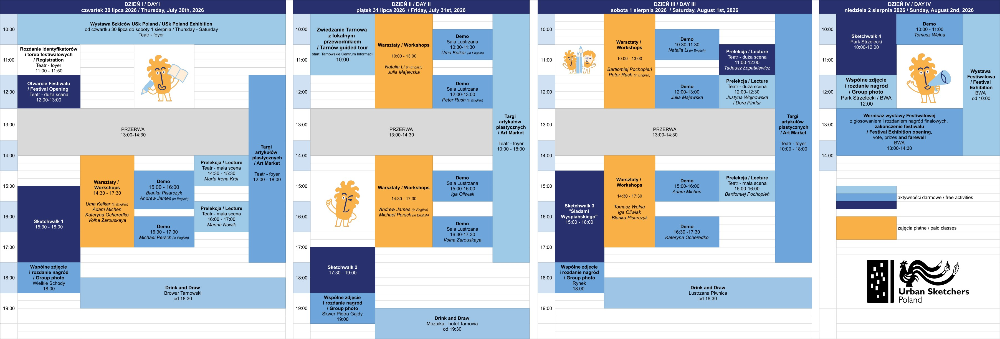
Trasy Sketchwalków
Sketchwalki to otwarte spacery rysunkowe, do których dołączyć może każdy, niezależnie od poziomu umiejętności - wystarczy lubić szkicować. W trakcie sketchwalka szkicujemy na żywo dowolną techniką, a na koniec robimy wspólne zdjęcie grupowe oraz oglądamy nasze szkice. Rozdajemy też nagrody za szkic i temat dnia. O godzinie rozpoczęcia spaceru wolontariusz prowadzi chętnych spod Multimedialnego Centrum Artystycznego przy Wałowej 25, ale można też dołączyć później na trasie.
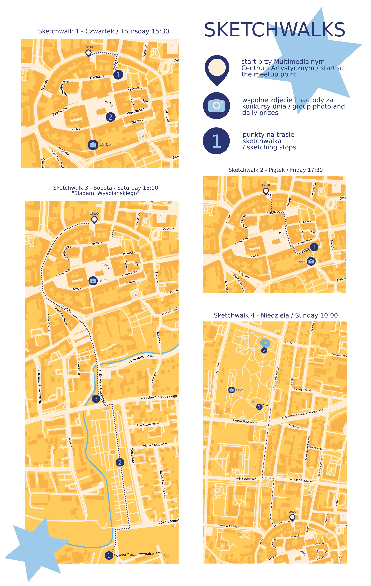
Otwórz lub pobierz sketchwalki w PDF
Mapa Festiwalowa
Na poniższej mapie znajdziesz najważniejsze punkty festiwalowe (Teatr, Multimedialne Centrum Artystyczne - Info Desk, Sala Lustrzana, BWA), muzea z darmowym wstępem i restauracje oferujące zniżki dla posiadaczy festiwalowego identyfikatora oraz polecane miejsca do naszkicowania.
Zniżki dla uczestników
Poniżej lista miejsc, które zapewniają zniżki dla osób posiadających festiwalowy identyfikator:
Darmowy wstęp:
- Muzeum Diecezjalne w Tarnowie
- Muzeum Ratusz – Galeria Sztuki Dawnej
- Muzeum Etnograficzne
- Muzeum Historii Tarnowa i Regionu
- Regionalne Centrum Edukacji o Pamięci
- Galeria „Panorama”
Zniżki:
- 4MusicArt -10%
- Aida -20% (poza obiadem dnia)
- Bar Frasses -10%
- Bombay Music -20%
- Browar Tarnowski -10%
- Cafe Tramwaj -1 zł
- Dzień Dobry -10%
- Indie Curry House -10%
- Ogród Smaków (obiad dnia w cenie 25 zł)
- Pół na Pół -10%
- Przystań Kantoria -10%
- Pyza -10%
- Restauracja Mozaika (w hotelu Tarnovia) -10% rabatu na danie z karty (bez napoi)
- Restauracja Różana -15% rabatu na dania z karty (bez napoi)
- Siga -20%
- Sofa -10%
- Szczęście -10%
- Święty Marcin -10%
- Yayoi Ramen -15%
- Pilipalili -10%
- Śródmieście Pub -10%
Targi Artykułów Plastycznych
Podczas Festiwalu we foyer Teatru im. Ludwika Solskiego będziecie mogli odwiedzić Targi Artykułów Plastycznych. Podczas trzech dni, od 30 lipca do 1 sierpnia, swoje produkty zaprezentuje 14 wystawców - będzie można porozmawiać z nimi, przetestować różne produkty i zakupić je w dobrej cenie. Wstęp wolny.
Lista stoisk:
- Caran d'Ache - Patron Festiwalu
- Etchr
- Hahnemuehle
- Kaweco x Twoje Pióro
- Koh-i-Noor
- KWZ Ink
- Liquitex (Colart)
- Moleskine
- PapierArtystyczny.pl
- Renesans
- Roman Szmal
- SklepPlastyczny.pl
- Stepp.pl
- oraz lotne stoisko Koval Sketchbooks, rozglądajcie się uważnie na mieście!
Program Festiwalu
Poniżej znajdziecie festiwalowy informator do pobrania w wersji pdf, a w nim:
- szczegółowy harmonogram Festiwalu,
- dokładne opisy warsztatów, pokazów i prelekcji.
Wszystkie punkty programu oznaczone w planie na niebiesko, są darmowe i ogólnodostępne. Warsztaty (oznaczone na żółto), są płatne i mogą w nich wziąć udział wyłącznie zapisane osoby.
Sprzedaż biletów na Festiwal i poszczególne warsztaty rozpocznie się 16 maja 2026 o godzinie 9:00. Rodzaje biletów:
- Bilet festiwalowy, zawierający identyfikator uprawniający do wielu zniżek i torbę festiwalową pełną prezentów od naszych sponsorów (ich listę znajdziecie poniżej) - 100zł
- Wejściówka festiwalowa, zawierająca identyfikator uprawniający do wielu zniżek i PUSTĄ torbę festiwalową (bez goodiesów) - 50zł
- Pojedynczy warsztat - 200zł
Bilet festiwalowy oraz wejściówka festiwalowa nie obejmują udziału w warsztatach, które wymagają osobnej rejestracji i biletu (każde zajęcia indywidualnie).
Sam bilet na warsztaty nie obejmuje identyfikatora festiwalowego ani pakietu uczestnika (goodie bag).
Wybrane wydarzenia Festiwalu mogą mieć charakter otwarty i odbywać się w przestrzeni publicznej. Udział w warsztatach jest przeznaczony wyłącznie dla osób pełnoletnich.
Zapisując się za festiwal, akceptujesz Regulamin i Politykę Prywatności wydarzenia.
Zapisy na Festiwal Miejskiego Szkicowania w Tarnowie 2026
Zapisy na Festiwal Miejskiego Szkicowania w Tarnowie rozpoczną się 16 maja 2026 (sobota) i będą prowadzone online za pośrednictwem platformy Evenea.
Harmonogram zapisów
od godz. 9:00 – sprzedaż:
biletów festiwalowych
wejściówek festiwalowych
od godz. 10:00 – sprzedaż:
biletów na poszczególne warsztaty
Warsztaty wymagają osobnej rejestracji i biletu. Nie są one zawarte w bilecie festiwalowym ani wejściówce festiwalowej. Nie trzeba mieć biletu festiwalowego lub wejściówki festiwalowej, aby zapisać się na warsztaty. Bilet na warsztaty nie zapewnia identyfikatora i torby festiwalowej.
Gdzie kupić bilety?
Sprzedaż prowadzona jest na platformie Evenea:
https://app.evenea.pl/event/festiwalmiejskiegoszkicowania2026
Zalecamy założenie konta w systemie Evenea z wyprzedzeniem oraz zapoznanie się z zasadami działania platformy, co pozwoli na sprawny i szybki zakup biletów – szczególnie w przypadku warsztatów z ograniczoną liczbą miejsc.
Płatności
Podczas zakupu dostępne są szybkie płatności obsługiwane przez PayU, w tym: BLIK, szybkie przelewy bankowe, karty płatnicze (Visa, Mastercard), Google Pay, Apple Pay
Język warsztatów
Warsztaty oznaczone jako “in English” odbywają się w języku angielskim. Pozostałe warsztaty prowadzone są w języku polskim.
Wydarzenia otwarte
Do wszystkich wydarzeń oznaczonych w harmonogramie kolorem niebieskim można dołączyć bez biletu festiwalowego i bez rejestracji. Są to wydarzenia otwarte, odbywające się w przestrzeni miasta.
FAQ – najczęściej zadawane pytania
Czy mogę wziąć udział w festiwalu bez biletu?
Tak. Bez biletu można dołączyć do wydarzeń oznaczonych w harmonogramie kolorem niebieskim.
Czy bilet festiwalowy obejmuje warsztaty?
Nie. Warsztaty wymagają osobnej rejestracji i biletu.
Czy mogę kupić warsztat bez biletu festiwalowego?
Tak. Należy jednak pamiętać, że sam bilet na warsztat nie obejmuje identyfikatora ani torby festiwalowej.
W jakim języku prowadzone są warsztaty?
Język warsztatu jest zawsze oznaczony w opisie i na bilecie.
Czy liczba miejsc jest ograniczona?
Tak. Dotyczy to zarówno biletów i wejściówek festiwalowych, jak i warsztatów.
Czy mogę kupić więcej niż jeden warsztat?
Tak, jednak należy zwrócić uwagę na godziny rozpoczęcia i zakończenia zajęć. Niektóre warsztaty odbywają się równolegle (nakładają się czasowo),
dlatego przed zakupem prosimy o dokładne sprawdzenie harmonogramu. Organizator nie ponosi odpowiedzialności za zakup warsztatów odbywających się w tym samym czasie.
Lista instruktorów, którzy wezmą udział w Festiwalu Miejskiego Szkicowania w Tarnowie (30.07 - 2.08.2026). Kliknij nazwisko danej osoby, aby wyświetlić więcej informacji.
WARSZTATY i POKAZY
- Andrew James
- Uma Kelkar
- Natalia Li
- Julia Majewska
- Adam Michen
- Kateryna Ocheredko
- Iga Oliwiak
- Michael Persch
- Blanka Pisarczyk
- Bartłomiej Pochopień
- Peter Rush
- Tomasz Wełna
- Volha Zarouskaya
PRELEKCJE
KORESPONDENCI
Organizatorzy


Partnerzy Festiwalu


Partnerzy - Gastronomia
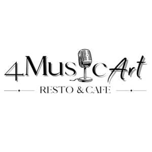
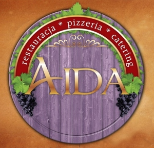
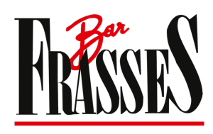
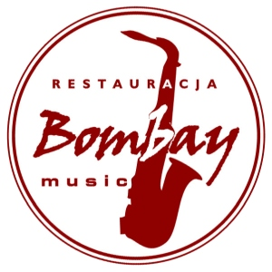
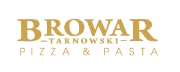
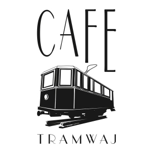
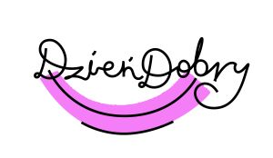
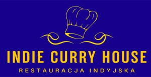
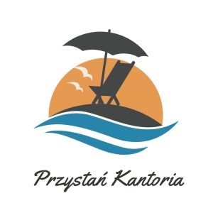
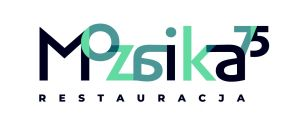
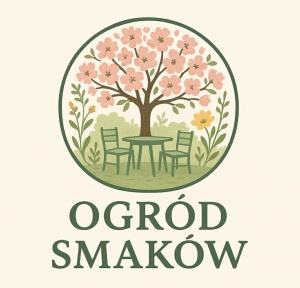
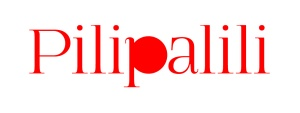
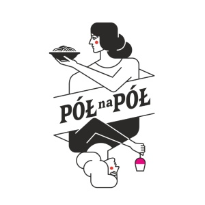
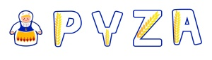
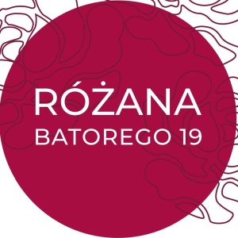
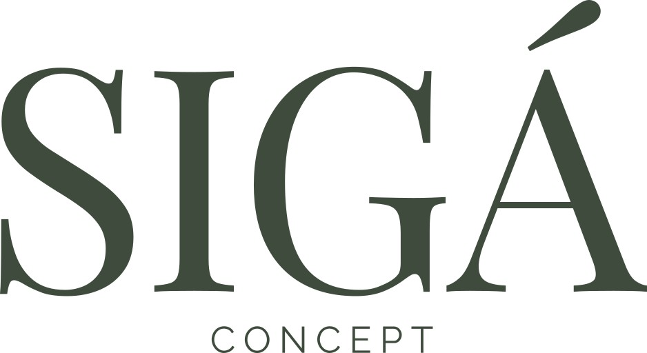
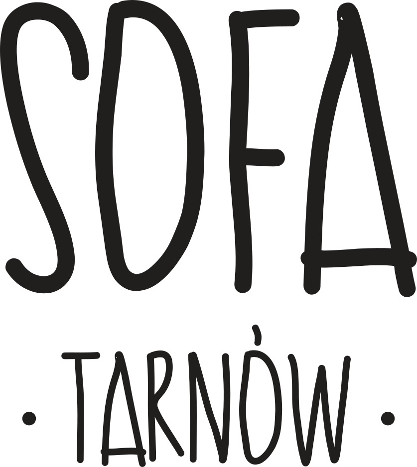
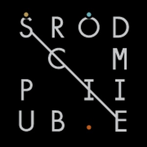
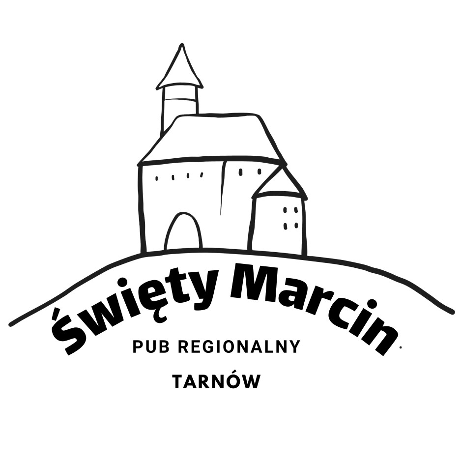
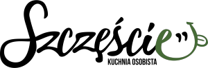
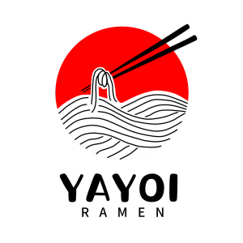
Patroni Festiwalu

Sponsorzy Festiwalu


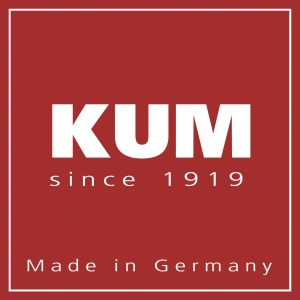


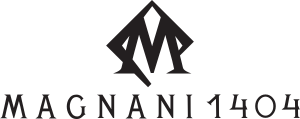


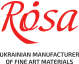


O poprzednich edycjach Festiwalu Miejskiego Szkicowania, które odbyły się w 2022, 2023 i 2024 roku w Świdnicy, przeczytasz w zakładce Blog.
Urban Sketchers Poland
KIM JESTEŚMY? Jesteśmy grupą promującą szkicowanie w przestrzeni miejskiej, zrzeszającą miłośników rysunku na każdym poziomie zaawansowania. Urban Sketchers to oddolna inicjatywa, która jest realizowana na całym świecie, a jej kolebką jest Seattle.
CO ROBIMY? Szkicujemy otaczający nas świat wszelkimi dostępnymi technikami, opierając się na bezpośredniej obserwacji i doświadczeniu bycia w danym miejscu. Publikujemy nasze prace w internecie i wspieramy się w twórczym rozwoju, tworząc jedyną w swoim rodzaju międzynarodową społeczność.
DLA KOGO? Nasze spotkania rysunkowe są dla każdego, niezależnie od wieku, poglądów i umiejętności - wystarczy jedynie lubić rysować (lub malować). Chcemy pokazywać świat widziany naszymi oczami przez każdy kolejny rysunek, który tworzymy.
Manifest, którego przestrzegamy podczas rysowania:
- Rysujemy na miejscu (na zewnątrz lub w budynkach), starając się uchwycić to, co widzimy w wyniku naszej bezpośredniej obserwacji.
- Nasze rysunki opowiadają historię naszego otoczenia, miejsc w których żyjemy i gdzie podróżujemy.
- Nasze rysunki są kroniką konkretnego czasu i miejsca.
- Wiernie oddajemy sceny, których jesteśmy świadkami.
- Korzystamy z wszelkich materiałów i pielęgnujemy nasz indywidualny styl.
- Wspieramy się wzajemnie i rysujemy wspólnie.
- Pokazujemy swoje prace w Internecie.
- Pokazujemy świat, przez każdy kolejny rysunek, który tworzymy.
Informacje o spotkaniach i innych organizowanych przez nas wydarzeniach znajdziecie tutaj.
Urban Sketchers w Polsce
Na poniższej mapie znajdziesz miejsca, w których znajdują się nasi sketcherzy oraz kontakt do nich. Chcesz z nami poszkicować? Napisz do nas!
Sympozjum Urban Sketchers - Poznań 2025
Nasz oddział był gospodarzem Międzynarodowego Sympozjum Urban Sketchers w dniach 20-23 sierpnia 2025 roku w Poznaniu. Po więcej informacji związanych z Sympozjum zapraszamy na stronę www.urbansketchers.org.
Wspólne zdjęcie z Sympozjum:
 Autor: Piotr Dutkiewicz
Autor: Piotr Dutkiewicz
Galeria zdjęć z Festiwalu Miejskiego Szkicowania w Świdnicy 2024:


Zdjęcia do pobrania znajdują się tutaj. Autor: Daniel Gębala
Magazyn "Szkicownik bez Granic"
Zapraszamy do czytania bezpłatnego magazynu "Szkicownik bez Granic", stworzonego przez sketcherów - dla sketcherów. Sprawdźcie, co ciekawego działo się w Polsce w temacie miejskiego szkicowania. Kolejne numery czasopisma w formacie PDF znajdziecie tutaj - możecie je pobrać za darmo!
Kontakt
Urban Sketchers jest organizacją non-profit mającą na celu szerzenie artystycznych, historycznych i edukacyjnych wartości wynikających z rysowania miejskich lokalizacji, promowanie swoich działań oraz łączenie ludzi na całym świecie, którzy rysują na żywo, w terenie (tam gdzie znajduje się to, co rysują) w miejscach, gdzie żyją i podróżują.
Urban Sketchers Poland jest lokalnym oddziałem tej organizacji, a jej celem jest szerzenie powyższych wartości i idei w Polsce.
Więcej informacji: www.urbansketchers.org